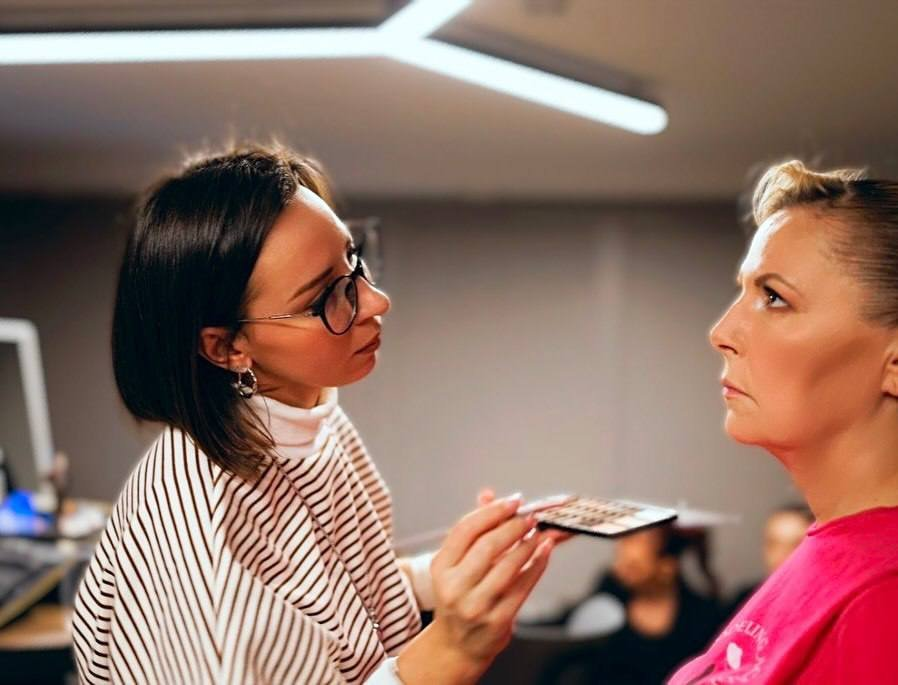
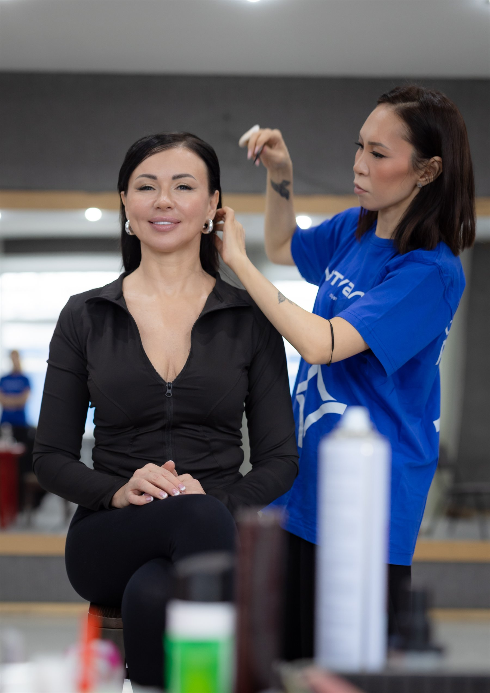

Co-founder
Виктория
Сацевич
Визажист • Стилист • Эксперт индустрии красоты
Биография
Более десяти лет в индустрии красоты
Сацевич Виктория Святославовна — эксперт индустрии красоты, профессиональный визажист и мастер перманентного макияжа с опытом работы более 10 лет.
За годы практики более 3000 клиенток доверили Виктории свою красоту и создание индивидуального образа.
Её профессиональная деятельность выходит далеко за рамки салонного визажа: работа с артистами российской эстрады, сопровождение гастрольных проектов, участие в fashion-событиях и проектах федерального уровня.
Профессиональный путь
Практика в разных городах и форматах
Passion Fashion и Miss & Mrs. Beauty
Ведущий визажист проектов.
Красноярск
Стилист-визажист фото- и видеопроектов.
Казань
Штатный визажист салона «ПрофКосмо» и визажист проекта «Я — модель».
Москва
Штатный мастер визажа имидж-агентства «Персона».
Portfolio
Работы и backstage




«Настоящий стиль не подчиняется мимолётным трендам. Он отражает индивидуальность, подчёркивает достоинства и создаёт впечатление, которое остаётся надолго».Виктория Сацевич